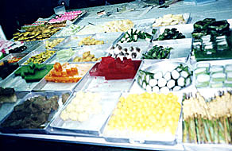

|
Sent: 15 Nov 99 12:28 GMT web version, with
|
|
| Prior Trav-E-Log: Taman Negara | Malaysia is ... markets, as well as jungle islands... |
(Note:) This is the 7th in a series of Trav-E-Logs sent while traveling in S.E.Asia between Oct 16, 1999 and Jan 22, 2000.Hi Folks,
Writing you from Kota Bharu (Baru), on the east coast of Malaysia, ready to pass into Thailand tomorrow. The boats have stopped running to the gorgeous island of Pulau Perhentian, in the South China Seas because the monsoon season is upon us. This is the island with just a few straw huts, that was perfect for a retreat 7 years ago, and it just seemed to be an ideal place to be alone for awhile, study, and play my fiddle. Well, it is now one of the biggest attractions on the east coast, and loaded with upscale resorts. So much for the ambiance of "no electricity" and drawing one's own water with a bucket from the well!
Two attractions in Kota Bharu I missed on my first trip are the markets. The photo above was taken from the second floor balcony of a three-story market, conveniently lit by the sun shining through the glass domed roof. The central area was dominated by produce vendors. Other areas of the first floor specialized in dried food, fresh fish, poultry, meat, and even prepared meals, but mostly food items. Dried goods, clothing, and household items were located on the second and third floors. The other market I missed was a parking lot by day, but a Night Market for several hours each evening. It seems the whole town shows up to patronize the food stalls, where delicious creations materialize before your eyes.
Thailand will be a new country for me. My plans are to stay in Southern Thailand for a week or so, then work back down the west coast of the peninsula to Melaka, Malaysia, where I will cross back into Indonesia about Thanksgiving.
One of the interesting travelers I met, an author from Japan, wrote a sensational book 16 years ago about being a "house husband" in Japan. Neat guy -- will try to keep in touch by email. Another author, a Spaniard, walked the total length of the Andes in South America, as mentioned in the last newsletter. These are the types of people you meet by shunning the private rooms and hotels, in favor of the cheaper "dormitory" lodgings. The typical dorm has sleeping space for 2 to 12 folks per room. The nicer ones give each dormer a key, but others have less security, meaning you have to keep your valuables on you at all times. Some have limited cooking facilities, but most have a common area where you gather with other travelers and swap stories. While riding on the jungle train from Mela to Kota Bharu, I ran into the first Americans I've seen since Bali. Two lawyers, both ladies, on a three week holiday, also trying to go to the Perhentian Islands. I wished them luck.
Surprisingly, I don't miss contra dancing. Guess meeting all the new folks, hiking, and jungle trekking gets my mind worlds away. I worry instead about mosquitoes, leaches, getting sick, or twisting a muscle, the latter two of which have not happened. On average, one can expect to be sick one or two days a month while traveling like this, so I must be doing something right. Like last night I had water buffalo meat for dinner with noodles and vegetables. A very dark, tough, but tasty meat.
Well, got to get back to the dorm and plan the next leg of the journey. Keep the Email coming, (w.a.ossa@bigfoot.com) but please forgive me if the answers are incorporated in the Trav-E-logs.
Bill